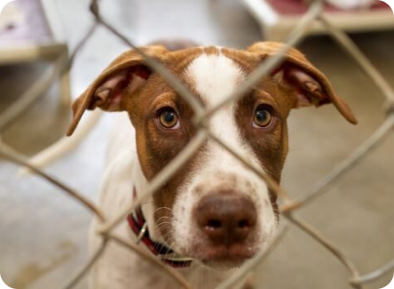
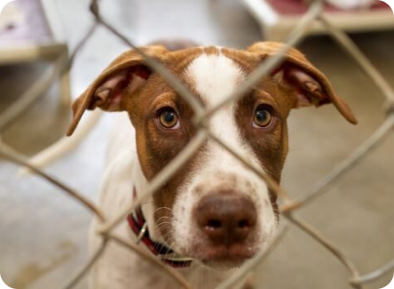

Sobre huellas Felices
 

Quienes somos
Bienvenidos a Huellas Felices, una asociación dedicada a mejorar la vida de nuestros amigos peludos y a fomentar la adopción responsable. Nacimos del amor y compromiso hacia los animales, con el objetivo de brindarles un segundo hogar lleno de cariño y protección. Creemos que cada mascota merece una vida digna y feliz, por eso trabajamos sin descanso para rescatar, rehabilitar y encontrarles un hogar donde puedan florecer y ser amados.Además, en Huellas Felices nos esforzamos por ofrecer una gama de productos de alta calidad para el bienestar de los animales. Desde alimentos especializados hasta juguetes y accesorios, todos nuestros productos están pensados para satisfacer las necesidades de cada mascota y ayudar a los adoptantes a proporcionarles el mejor cuidado posible.
Únete a nuestra misión y ayúdanos a dejar huellas felices en la vida de cada animal que pasa por nuestras manos. Aquí, cada pequeña contribución, ya sea adoptando, colaborando o simplemente difundiendo nuestro trabajo, hace una gran diferencia. ¡Hagamos juntos de este mundo un lugar mejor para ellos!